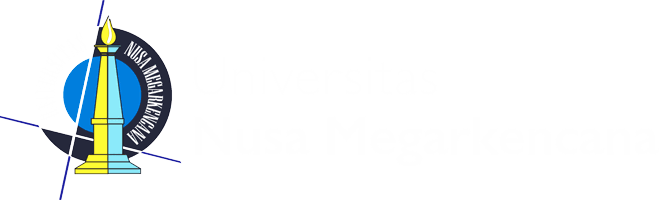
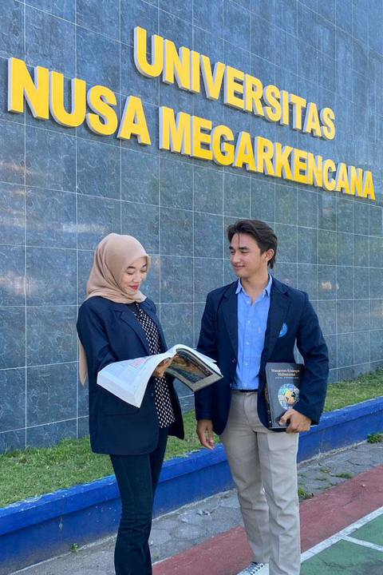
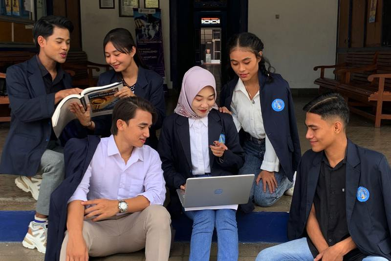
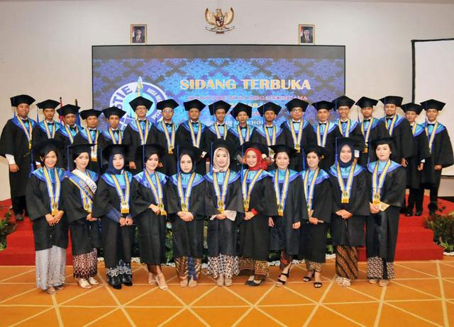
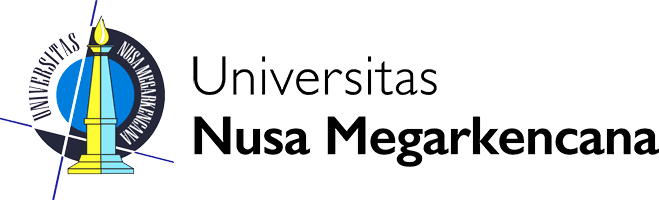

Fakultas Teknik dan InformatikaYogyakartaProgram Studi
Teknik Sipil
Menyiapkan sarjana teknik yang terampil dan profesional dalam merencanakan, merancang, dan membangun infrastruktur untuk pembangunan berkelanjutan.



Belajar teknik sipil dari teori hingga praktik lapangan
Program Studi Teknik Sipil UNMEKA mempersiapkan lulusan yang mampu merencanakan, merancang, dan membangun infrastruktur. Pembelajaran memadukan teori dengan praktik lapangan untuk menghasilkan solusi inovatif bagi pembangunan berkelanjutan.
Universitas yang tumbuh sejak 1998
- Fakultas
- 2Fakultas Ekonomi dan Bisnis serta Fakultas Teknik dan Informatika
- Program studi sarjana
- 5Termasuk Teknik Sipil, Sistem Informasi, dan Informatika
- Dosen di lima prodi
- 30Lima di antaranya mengajar di Program Studi Teknik Sipil
- Jalur pendaftaran
- 6Termasuk KIP-Kuliah hingga 100% dan Prestasi Raport hingga 50%
Berita terbaru
Pendaftaran dibuka melalui enam jalur
Tersedia bantuan biaya KIP-Kuliah hingga 100% dan beasiswa Prestasi Raport hingga 50%. Jalur Transfer, Ekstensi, dan Karyawan juga tersedia.
Dosen Program Studi
Lima bidang utama teknik sipil
Pilih bidang untuk melihat cakupan dan mata kuliah yang terkait.
Kehidupan kampus

YogyakartaUnggul · Mandiri · Berdaya Saing
Universitas Nusa Megarkencana bernaung di bawah Yayasan Pendidikan Nusa Megarkencana dan memperoleh izin perubahan bentuk menjadi universitas pada 23 Juli 2024. Program Studi Teknik Sipil hadir sebagai bagian dari Fakultas Teknik dan Informatika.
Mulai langkahmu menjadi Sarjana Teknik.
Pilih jalur yang sesuai, siapkan berkas, lalu daftar melalui portal resmi UNMEKA.